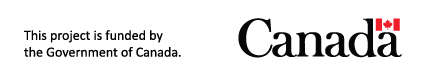

Prototype. Ce site présente une version expérimentale en développement. De nombreux ajouts sont prévus, notamment le coût du transport en commun, l'impact sur la pollution, et bien plus encore.
Localisation est un outil open source développé par la Chaire Mobilité de Polytechnique Montréal. Le projet s'articule autour de trois volets : soutenir les ménages dans leur choix de lieu de résidence, aider les planificateurs de transport et accompagner les organismes publics dans l'évaluation de sites. Ce projet a été financé par le gouvernement du Canada.
Le premier volet (le choix résidentiel) est exploré dans ce prototype. Il combine des modèles de coûts automobiles et de détention de véhicules, une analyse d'accessibilité multimodale (auto, transport collectif, vélo, marche) et la localisation des points d'intérêt. Les volets 2 et 3 (planification de réseau et évaluation de sites) sont implémentés directement dans Transition.
Essayer la démo Voir Localisation GitHub
Prototype. This site presents an experimental work-in-progress version. Many more features are planned, including public transit costs, environmental pollution impacts, and much more.
Localisation is an open-source tool developed by the Mobility Chair at Polytechnique Montréal. The project is organized around three modules: helping households choose where to live, supporting transit planners, and helping public agencies evaluate facility locations. This project was funded by the Government of Canada.
The first module (residential choice) is explored in this prototype. It combines vehicle cost and car-ownership models, multimodal accessibility analysis (car, transit, cycling, walking), and points-of-interest data. Modules 2 and 3 (network planning and site evaluation) are implemented directly in Transition.
Try the demo View Localisation GitHub
